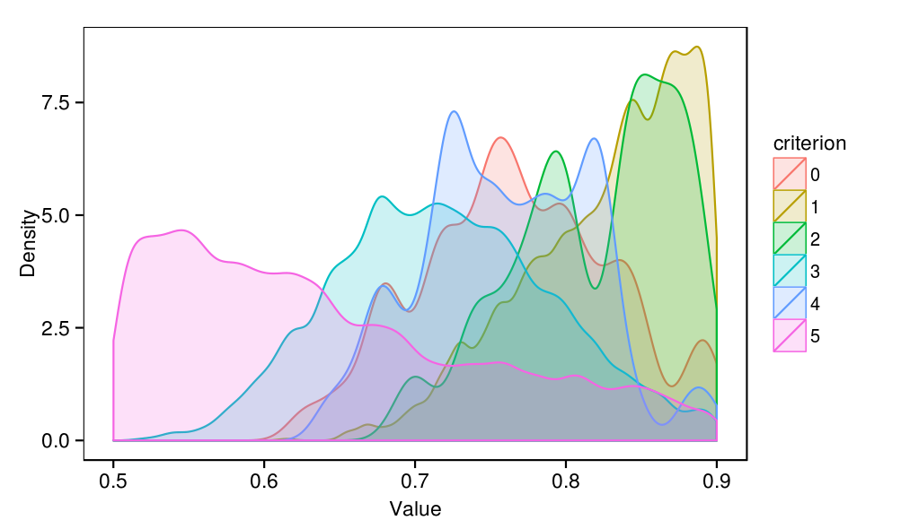
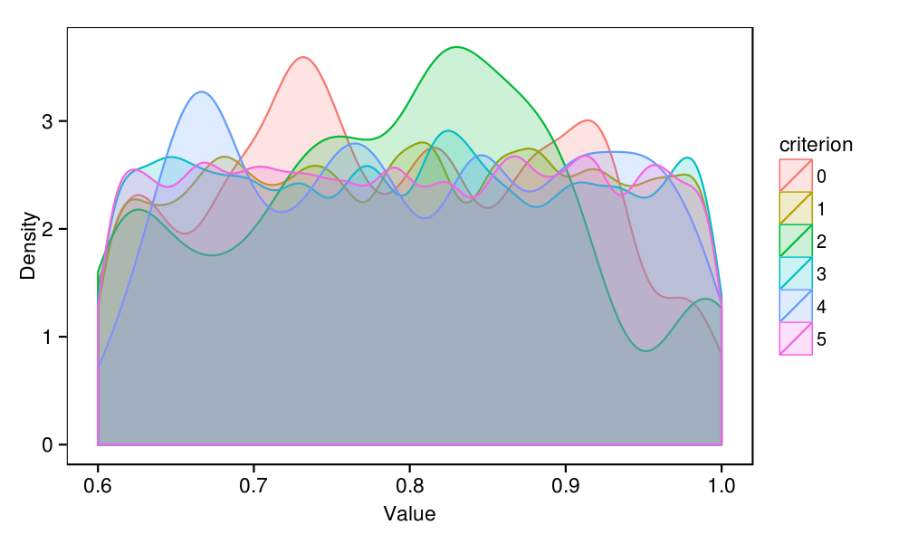
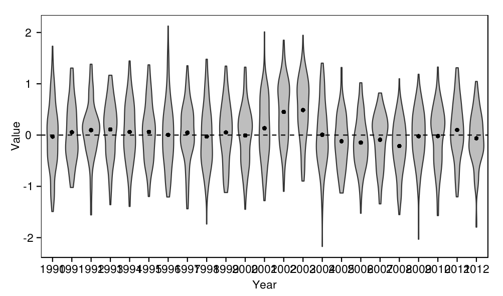

Indian Ocean skipjack model : conditioning based on feasibility constraints
This section describes an approach to model conditioning using the Feasible Stock Trajectories (FST) algorithm (Bentley and Langley 2012). Rather than estimating parameters using full likelihoods, FST uses feasibility criterion to accept or reject sets of parameters drawn from their prior distributions. Feasibility criteria can be based on a priori beliefs about the stock or on "features" of the observed data. Although unsophisticated, this approach can provide a pragmatic means for conditioning an operating model.
In the Indian Ocean skipjack model
source('../../common.R',local=T)
require(stringr)
load(c(
'accepted',
'rejected',
'track'
),from='../../feasible/output')
rejects <- table(rejected$criterion)
| Code | Criterion | Trials failing this criterion |
|---|---|---|
| 1 | Stock status must always be >10% B0 | 2128 |
| 2 | Stock status must be less than 100% B0 since 2008 | 22 |
| 3 | Maldive PL CPUE must increase from 2004 to 2006 | 2046 |
| 4 | Maldive PL CPUE must decrease from 2004 to 2011 | 107 |
| 5 | Z-estimates for 50-55cm fish between 2006 and 2009 must be between 0.2 and 0.7 | 5584 |
print( ggplot(subset(track,quarter==0),aes(x=year+quarter/4,y=biomass_spawning_overall/1000,group=replicate)) + geom_line(alpha=0.2) + scale_y_log10() + labs(x="Year",y="Total spawning biomass (`000 t)") )
plot_densities <- function(param){
name <- paste0(param,".value")
values <- rbind(
data.frame(value=accepted[,name],criterion=0),
data.frame(value=rejected[,name],criterion=rejected$criterion)
)
values$criterion = factor(values$criterion)
print(
ggplot(values,aes(x=value,fill=criterion,colour=criterion)) +
geom_density(adjust=1/2,alpha=0.2) +
labs(x="Value",y="Density")
)
}
plot_densities(param)
plot_densities(param)
plot_densities(param)
plot_densities(param)
plot_densities(param)
temp <- melt(accepted[,paste0("recruits_deviations.",1990:2012,"..value")])
temp$year <- str_extract(temp$variable,"\\d+")
print(ggplot(temp,aes(x=year,y=value)) +
geom_violin(fill='grey') +
geom_point(data=ddply(temp,.(year),summarise,y=mean(value)),aes(y=y)) +
geom_hline(y=0,linetype=2) +
labs(x='Year',y='Value'))

recruits_deviations parameters that passed all feasibility criteria. The dots represent the mean of each distribution.